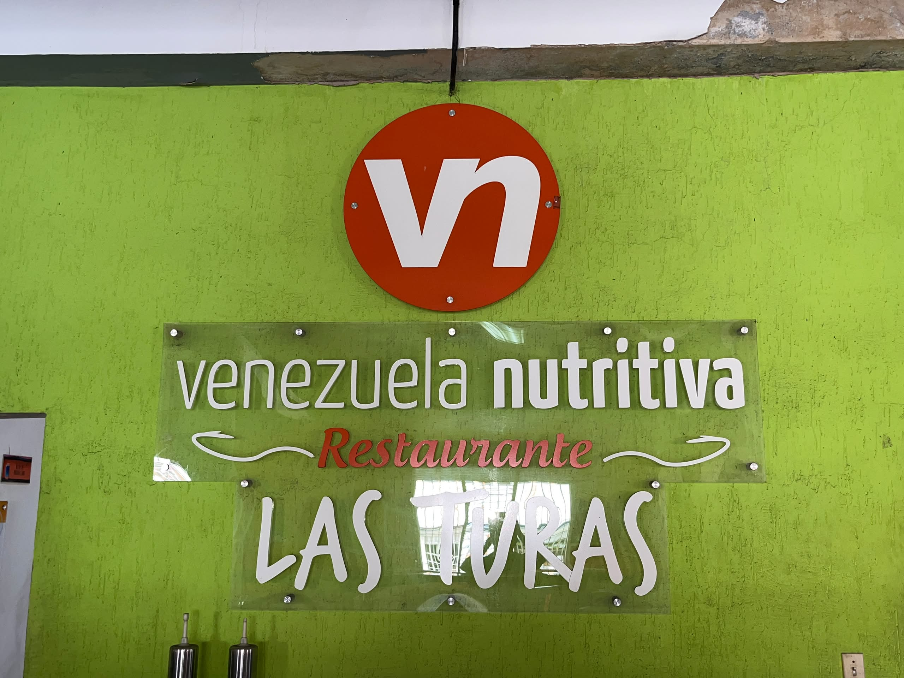
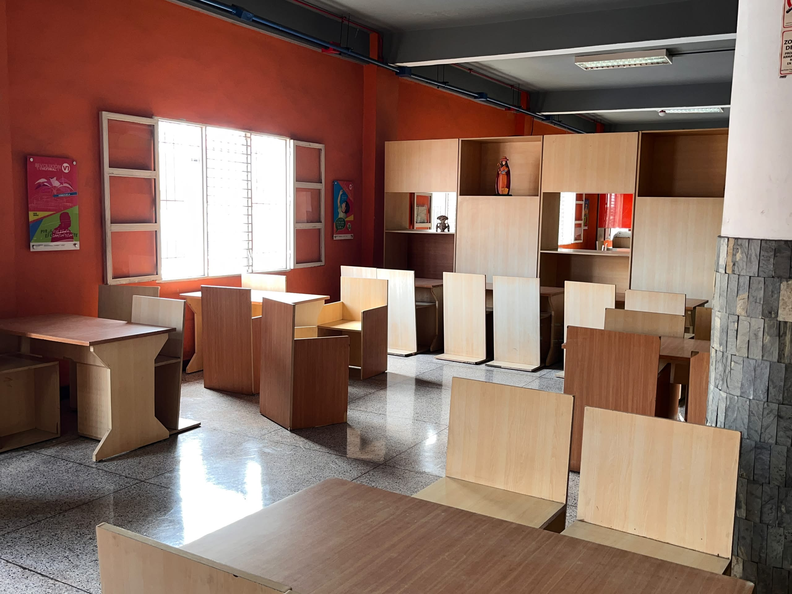

Bienvenidos a "Las Turas"
Somos un espacio dedicado a promover la cultura alimentaria y nutricional en Barquisimeto, ofreciendo a diario alimentación balanceada bajo el concepto de las 4-S: Sano, Sabroso, Seguro y Soberano.


Centro de Cultura Alimentaria y Nutricional - INN
Somos un espacio dedicado a promover la cultura alimentaria y nutricional en Barquisimeto, ofreciendo a diario alimentación balanceada bajo el concepto de las 4-S: Sano, Sabroso, Seguro y Soberano.

